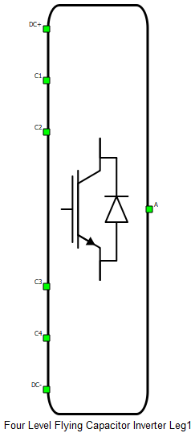
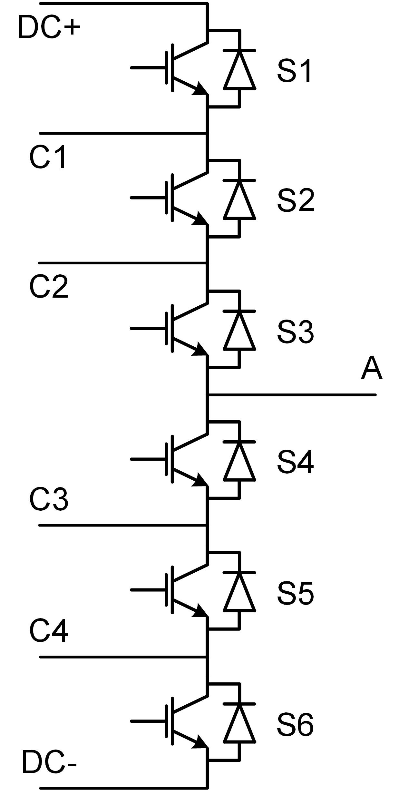

Four Level Flying Capacitor Inverter Leg
Description of the Four Level Flying Capacitor Inverter Leg component in Schematic Editor

Schematic Block Diagram
A schematic block diagram of a Four Level Flying Capacitor Inverter Leg component with corresponding switch naming is shown in Figure 2.
Weight of Four Level Flying Capacitor Inverter Leg component for real-time/VHIL simulation is 2.

Control
Selecting Digital inputs as the Control parameter enables assigning gate drive inputs to any of the digital input pins (from 1 to 32(64)). For example, if S1 is assigned to 1, the digital input pin 1 will be routed to the S1 switch gate drive. In addition, the gate_logic parameter selects either active high (High-level input voltage VIH turns on the switch), or active low (Low-level input voltage VIL turns on the switch) gate drive logic, depending on the design of the external controller. In TyphoonSim, digital signals are read from the internal virtual IO bus. Hence, if some signal is sent to digital ouput 1, it will appear on digital input 1.
Selecting Model as the Control parameter, enables setting of the IGBT gate drive signal directly from the signal processing model. The input pin s_ctrl appears on the component. It requires a vector input of six gate drive signals in the following order: [S1, S2, S3, S4, S5, S6]. When controlled from the model, logic is always active high.
Digital Alias
If a converter is controlled by digital inputs, an alias for every digital input used by the converter will be created. Digital input aliases will be available under the Digital inputs list alongside existing Digital input signals. The alias will be shown as Converter_name.Switch_name, where Converter_name is name of the converter component and Switch_name is name of the controllable switch in the converter.
Ports
-
DC+
- DC input + port
- DC-
- DC input - port
-
C1
- Flying capacitor C1 port
-
C2
- Flying capacitor C2 port
- C3
- Flying capacitor C3 port
- C4
- Flying capacitor C4 port
- A
- Converter output port
- s_ctrl (in)
- Available if model control is selected
- Six element (vector) input gate signal for a switches
General (Tab)
- Control
- Specifies how switches are controled. It is possible to choose between: Digital inputs and Model
- More details about each type of control can be found in the Control section
- If Digital inputs is selected as Control, the following
properties can be used:
- S1
- Digital input that is used to control S1 switch
- S1_logic
- Logic that will be applied to control signal for S1
- Active high or active low
- S2
- Digital input that is used to control S2 switch
- S2_logic
- Logic that will be applied to control signal for S2
- Active high or active low
- S3
- Digital input that is used to control S3 switch
- S3_logic
- Logic that will be applied to control signal for S3
- Active high or active low
- S4
- Digital input that is used to control S4 switch
- S4_logic
- Logic that will be applied to control signal for S4
- Active high or active low
- S5
- Digital input that is used to control S5 switch
- S5_logic
- Logic that will be applied to control signal for S5
- Active high or active low
- S6
- Digital input that is used to control S6 switch
- S6_logic
- Logic that will be applied to control signal for S6
- Active high or active low
- Gate control enabling
- If enabled, gives a possibility to control if changes in the gate control signal are applied or not
- Sen
- Available if Gate control enabling is enabled
- Digital input that enables/disables switching
- Sen_logic
- Available if Gate control enabling is enabled
- Logic that will be applied to Sen signal
- S1
- If Model is selected as Control, the following properties can be
used:
- Execution rate
- Defines the period between two updates of gate signals for the component. Gate signals are provided as a signal processing input to component
- Execution rate
Extras (Tab)
- Public - Components marked as public expose their signals on all levels.
- Protected - Components marked as protected will hide their signals to components outside of their first locked parent component.
- Inherit - Components marked as inherit will take the nearest parent 'signal_access' property value that is set to a value other than inherit.